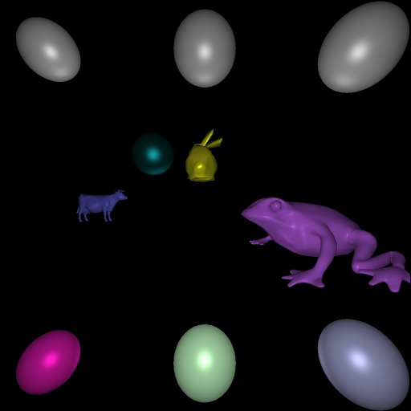
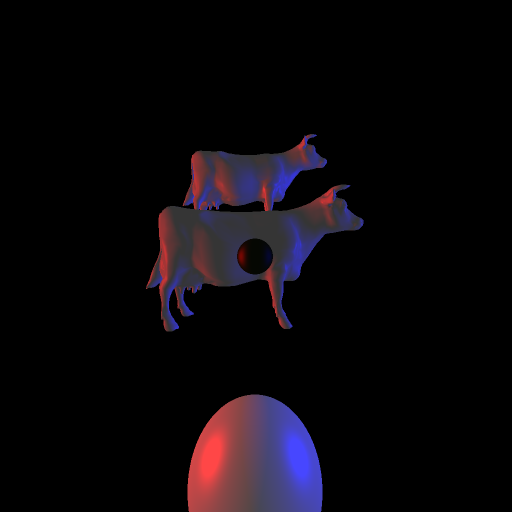
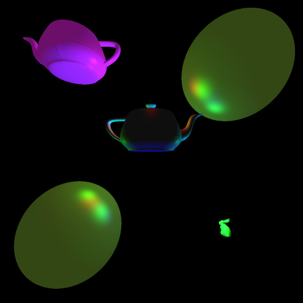
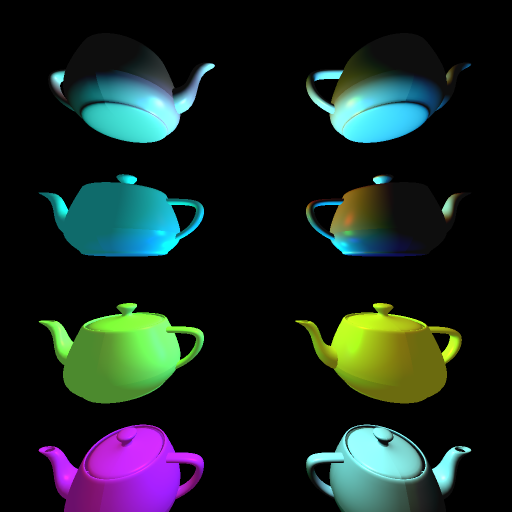

Input file: first_input.txt
This image satisfies the specifications from the instructions.
It took 1.24 seconds to generate this image with acceleration, and 1 minute and 57 seconds without.

Input file: second_input.txt
It took 0.79 seconds to generate this image with acceleration, and 1 minute and 6 seconds without.

Input file: third_input.txt
It took 1.258 seconds to generate this image with acceleration, and 1 minute and 11 seconds without.

Input file: fourth_input.txt
It took 4.449 seconds to generate this image with acceleration, and 4 minutes and 30 seconds without.